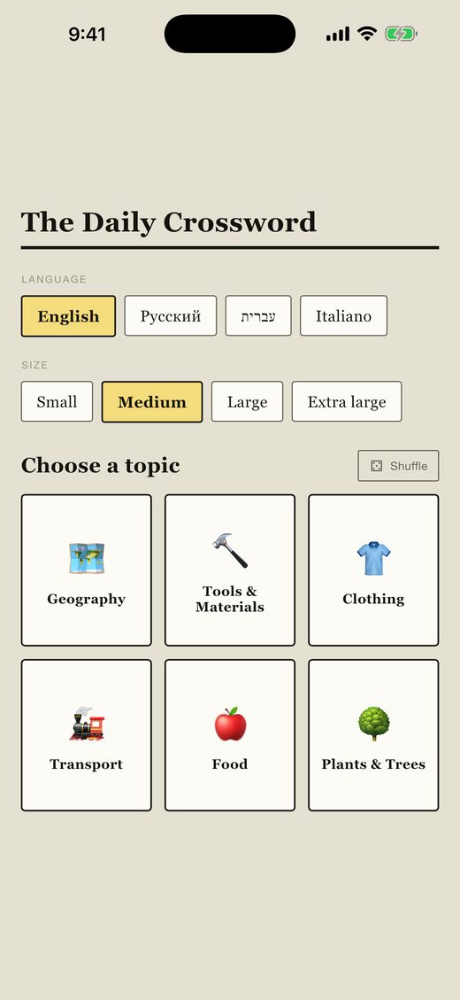
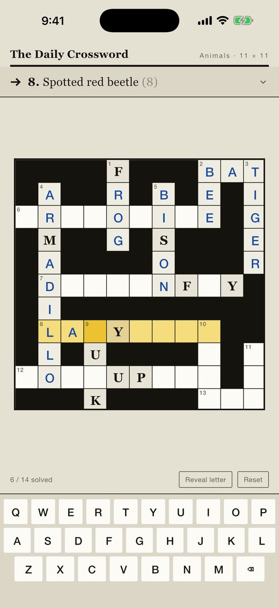
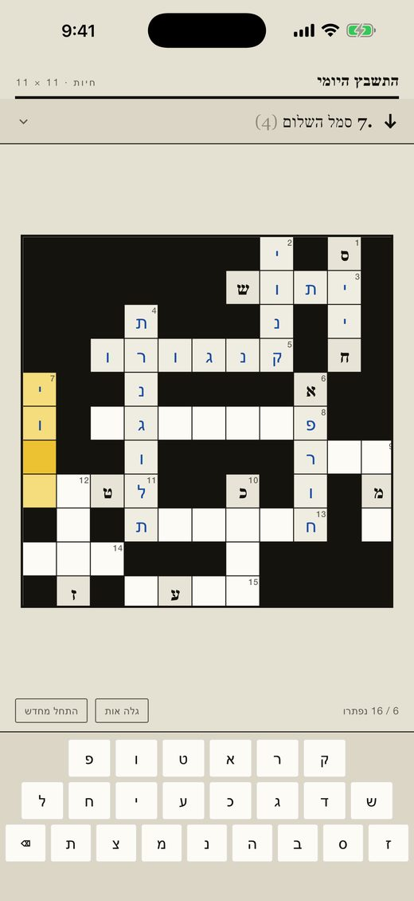
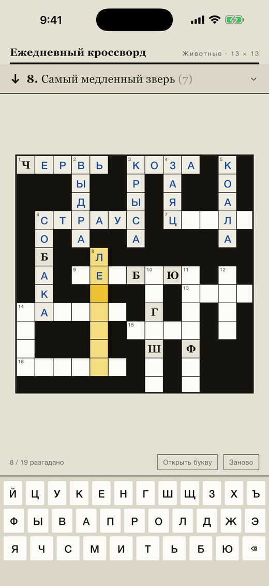
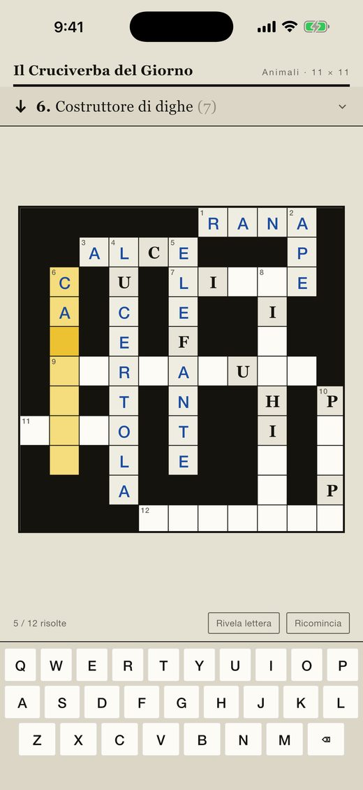
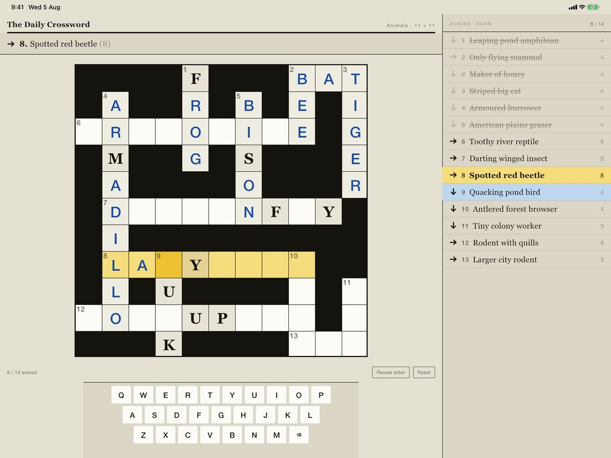
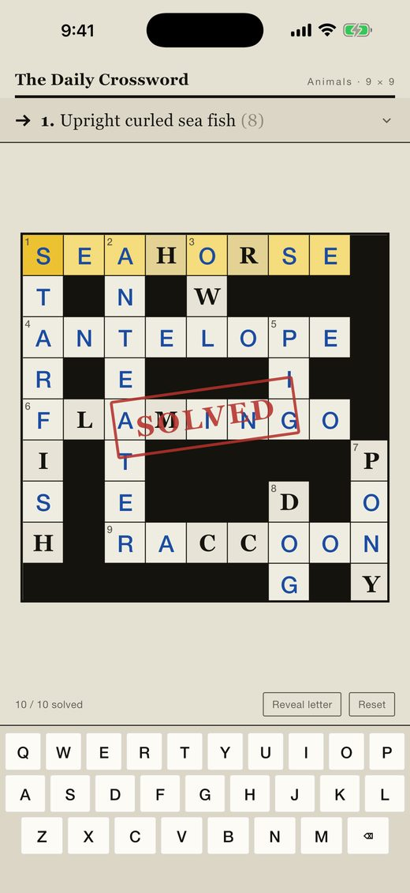

One topic at a time
Every puzzle is built from a single themed vocabulary list — food, animals, the body, travel, music, science and space, tools, professions, and eight more. You're not learning scattered words; you're filling in one corner of the language at a time, and the crossings mean you meet each word from two directions.
Fifteen topics, four grid sizes, 220 puzzles.
Written in the language, not translated into it
Clues are in the same language as the answers. A Russian puzzle gives you a Russian definition and expects a Russian word — no English in between. That is the difference between practising vocabulary and practising translation.
Hebrew that actually works
Across-words read right to left, so the first letter of an answer sits at the right-hand end of its run and clue numbers sit in the top-right corner of the cell. Final letter forms — ך ם ן ף ץ — are drawn correctly at the end of a word without becoming different letters in the grid. The whole interface mirrors; the grid does not turn upside down.

The keyboard your language actually uses
QWERTY for English and Italian, ЙЦУКЕН for Russian, a right-to-left Hebrew layout with all twenty-two letters. Not a general-purpose keyboard with the wrong letters on it.
Made for a tablet too
On iPad the clue list is a permanent sidebar rather than an overlay, so the whole puzzle and every clue are on screen at once.

No lives. No energy. No timers.
Nothing counts down and nothing locks you out. Play one puzzle or nine. Your progress is saved as you type, and the whole game works with no network connection at all — every puzzle and word list ships inside the app.

About the ads
The game is free and carries occasional full-screen ads. They appear only after you finish a puzzle — never in the middle of one, and never when you give up on one. None at all until you've completed two.
If you'd rather not see them, a single one-off purchase removes them permanently. The button sits quietly under the topic cards from the day you install it, and the offer is put in front of you once, after ten puzzles. There's no subscription and nothing else to buy.
The app does not track you. It never asks for tracking permission, never touches your advertising identifier, and every ad request is marked non-personalised. See the privacy policy.
Languages
Puzzles ship in English, Русский, עברית and Italiano. Spanish, French and German have their alphabets, keyboards and interface text ready and are waiting on vocabulary.